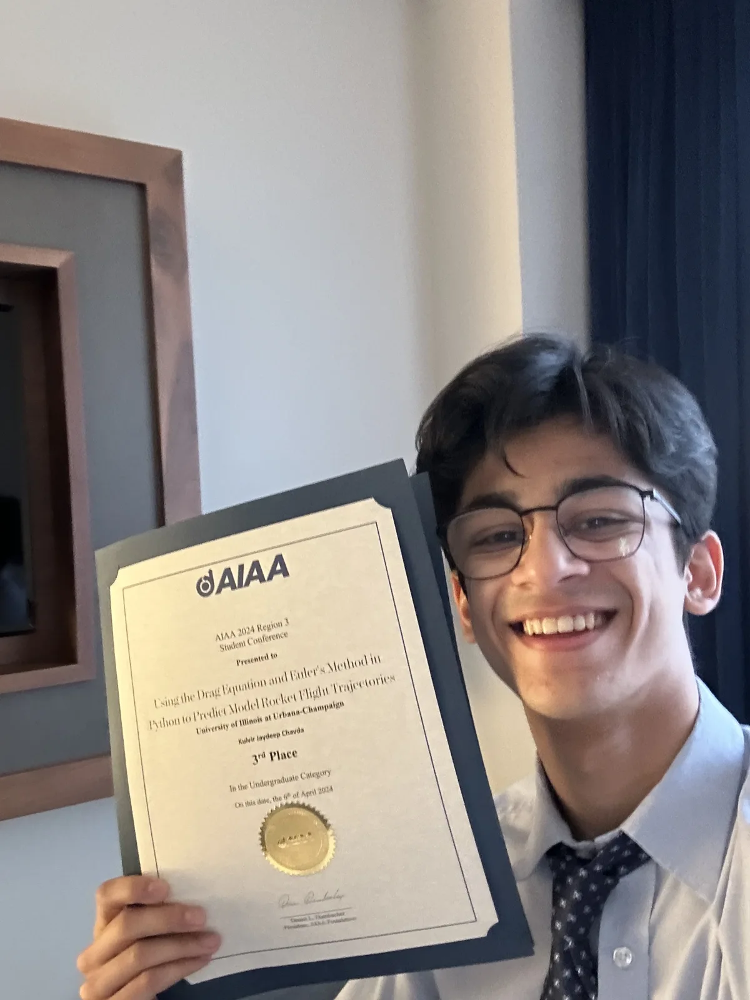

IN PROGRESS
Expected August 2028
Carnegie Mellon University
Master of Science in Robotics · Robotics Institute
Research with Prof. Matt Travers in exploration and field robotics.
About me
I’m Kulvir Jaydeep Chavda, a robotics master’s student at Carnegie Mellon. I’m interested in building autonomous systems that can move, sense, and explore beyond familiar environments.

Currently / Pittsburgh, Pennsylvania
At CMU, I work with Prof. Matt Travers on exploration and field robotics. My current project, NOMORA, investigates hybrid ground-air exploration supported by an autonomous surface vessel.
Before CMU, I studied aerospace engineering at Illinois, worked on aircraft systems at Stratos and R&D at Adani, and led technical projects at MAero. I’ve also spent time teaching rocketry and learning to fly.
I’m interested in taking research into practical engineering, and eventually building something of my own.
View my CV · August 2026 ↗Education
IN PROGRESS
Expected August 2028
Master of Science in Robotics · Robotics Institute
Research with Prof. Matt Travers in exploration and field robotics.
GRADUATED
May 2026
Bachelor of Science in Aerospace Engineering · Minor in Computer Science
Highest Honors · James Scholar Honors · GPA 3.83 / 4.00
COMPLETED
May 2026
FAA-approved Private Pilot Certification program · Part 141
Technical toolkit
ROS 2, SLAM, state estimation, multi-robot coordination, LQR/PID/robust control, Webots, Qualisys motion capture.
Python, C/C++, MATLAB, Simulink, Java, Linux/Unix, numerical methods, applied machine learning, data visualization.
SolidWorks, Siemens NX, Fusion 360, CATIA, 3D printing, prototyping, avionics integration, wiring, Eagle EDA, Proteus.
FreeFlyer, OpenRocket, BurnSim, flight dynamics, and foundations in computational fluid dynamics and finite element analysis.
Technical project leadership, systems requirements, experiment planning, scientific writing, teaching, and mentorship.
Gujarati and Hindi: native.
English: proficient.
Recognition
Highest Undergraduate Honors · UIUC
2026Stu Moment Aviation Citizenship Scholarship · UIUC
2025-263rd place, undergraduate category · AIAA Region III Student Conference
2024Dean’s List · Grainger College of Engineering
Fall 2024James Scholar Honors · UIUC
2024